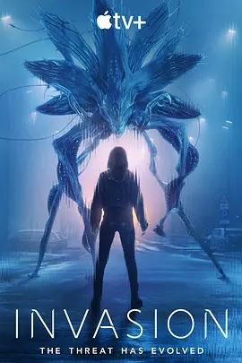

5.6
入侵 第三季
Invasion Season 3
2025
加拿大
评分 5.6
导演:
Alik Sakharov / Sylvain White / Daisy von Scherler Mayer / Brad Anderson
演员:
格什菲·法拉哈尼 / 沙米尔·安德森 / 忽那汐里 / 比利·巴瑞特 / 伊川东吾
类型:
剧情,悬疑,科幻
剧情简介
第三季的故事在全面战争阴影下展开。外星力量的形态与策略不断变化，让人类原本岌岌可危的局势再次被推向深渊。各地抵抗组织被迫重新整合，军方试图从零碎的记录与残留物中找到理解入侵者的新线索，而科学家们也不断提出激进的假设，希望从未知之中找到突破口。废墟中的城市呈现出幽暗且绷紧的氛围：夜间巡逻队在废弃的高架桥下穿行，监听设备捕捉到断断续续的低频震动；避难所里，人们在昏黄的灯光下悄声交谈，每个人都怀着无法言说的恐惧。与此同时，几位核心角色在新的环境中迎来各自的抉择——有人揭开过去的伤口，有人被迫承担意料之外的责任，有人意识到这场战争远比想象中复杂。随着季节推进，外星势力的目标逐渐露出更隐秘的轮廓，它们的行动模式仿佛带着某种深层目的，而非单纯破坏。剧集在紧张节奏中展示各国对外星侵袭的不同应对方式，也放大了个体在巨大危机前的挣扎与坚持。场景中的光影交错、风暴般的能量波动、地表之下若隐若现的活动迹象，都让人感到威胁正在逼近最后的临界点。本季继续以多线叙事呈现全球视角，在混乱、希望与冲突中推动故事前行，为这场漫长的入侵战争揭开新的阶段。